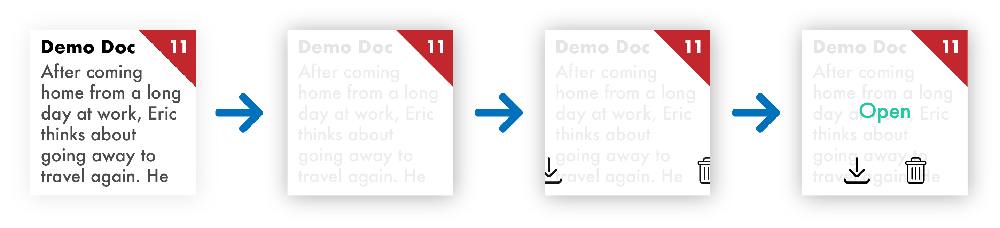

Overview
Grammarly’s current document library is static, unconsidered, and doesn’t follow core user experience principals. Through 4 levels of interaction, this redesign serves to enhance the existing document library with foundational design techniques, simplicity like its brand, and delightful micro interactions.
Current Design
You can find the current interaction on Grammarly’s Website.
Context & Challenge
One major problem in terms of User Experience is the ability to make a destructive decisions with just 1 click. In just one click, you delete a document, on top of this, there is no archive/trash section, users must contact Grammarly support to undo this, an unsatisfactory experience.
"I believe in forgiving design, don’t punish users for unintended actions." -Hunter
In terms of visual feedback, the current interaction is very static and there is little motion found. Eased transitions would allow better eye tracking, as well as improve cursor indicative qualities such as knowing which cards, buttons, and icons you are covering over.
Process & Insight
The process of building this multi-layered interaction started by listing out what the current design does, including Triggers, Rules, Feedback, Loops, and Modes. Writing these out in detail help to breakdown what is going on, and what should be.
In terms of building the layers, I found it easiest to design the initial and end state first, this helps guide the design on how to get to the end.
For coding more complicated aspects, I referred to working examples found online to see their process. This jumpstarted my own solutions. Opposite of my my professor suggested, retrofitting online samples, I prefer to build smaller projects from the ground up that way I can fully understand my code and work out issues along the way without having to discover things I did not know were going on.
To keep branding and user emotional response consistent, I have chosen a flat, vibrant color theme and simple shapes to maintain the identity of Grammarly, as they do this well.
The 4 Levels
= Mouse Hover
= Mouse Click
Level 1
Level 2

Level 3

Level 4

The Solution
By following fundamental web design principals, I incorporated a confirmation page before deleting cards. All transitions take place in 0.2 seconds, to keep process feeling fast, but the eye can follow what is happening.
I am much more satisfied having built the interaction in my own way as it caters to my desires better than an online sample.
You can view the design notes including all Triggers, Rules, Feedback, Loops, and Modes by clicking here.
# of issues
8
COM 204
There was a stream where I had been fetching water. A flow station was built nearby and now...
# of issues
11
ENG 203
My greatest, my only true possession was my father’s guitar. It was made of fine polished...
# of issues
5
PSY 231
Ambiguous loss is a term coined by Pauline Boss, a University of Minnesota professor, to...
The Results
The solution to the problems and preferences mentioned at the beginning was a 4 layer system of interactions that give the user seamless usability, confidence in their operation, and a delightful experience using solid styles and transitions.